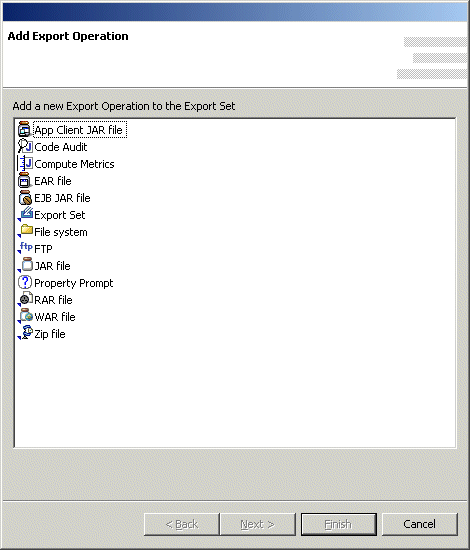
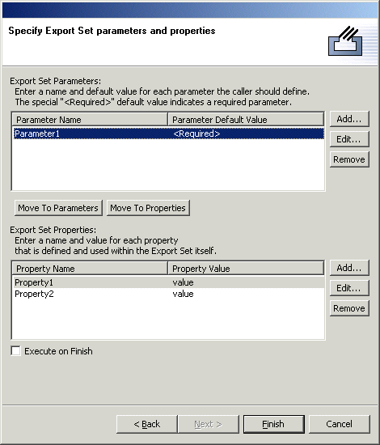

Export Set
CodePro facilitates naming and saving File system, JAR file and Zip file export configurations ("Export Sets") to be executed repeatedly. Multiple export sets can be grouped together as a Batch Export Set and executed as a single unit. Export sets are saved in XML format as standard ANT scripts. Export Sets may also be scheduled to execute at various times and in response to certain events by creating an Export Set task with the scheduler.
Creating, editing and running Export Sets
To create a new Export Set, edit or run an existing one, open the Export Wizard, select "Export Set" and click "Next". The first page of the Export Set wizard provides options for creating a new Export Set or accessing existing ones.
Running an Export Set
To run an existing Export Set, select it in the list and click "Finish". If the Export Set is not listed, click the "Browse" button to select it in the project hierarchy or the "Scan" button to perform an exhaustive search of the loaded projects to find and Export Set files. You can also run an Export Set at any time by right-clicking on it in the workbench window and selecting the "Run Ant..." command.
Creating or editing an Export Set
Export sets are saved as part of a project. To create a new Export Set, select the project in which to save the Export Set, give it a file name and click "Next". To edit an existing Export Set, select it in the list and click the "Next" button. The next page of the Export Set wizard shows the various export operations that make up the export set as well as the description of the export set.
Export operations may be added to the end of the list, inserted before an existing operation, edited or removed. The execution order of the export operations may also be changed using the "Top", "Up", "Down" and "Bottom" buttons. At the bottom of the page, the "Execute on Finish" checkbox controls whether the export set is executed when the "Finish" button is clicked or simply saved.
Adding or inserting and export operation
Clicking the "Add" or "Insert" button will open the "Add Export Operation" wizard.

Supported export operations include:
Supported WebSphere Studio Application Developer 5.x export operations include:
Additional CodePro AnalytiX export operations include:
Select any of the export operation types and click the "Next" button. The following wizard pages should be identical to those one would find in the standard export wizard if one were starting any of the standard export operations manually. The only difference is that the "Finish" button that would be present in the standard export wizard has been replaced by a "Save" button indicating that the export operation is to be saved to the export set rather than immediately executed. You can also add any standard ANT operation by manually editing the Export Set file.
Defining parameters and properties
The last page of the wizard is used to define export set parameters and properties.

Parameters
The top half of the page is used to define parameters that are passed into this export set when it is nested inside another export set. Each parameter may either have a default value or be "required". During execution, the value for a parameter is determined as follows:
- If the outer export set defines a value for the parameter, then that value is used by the inner export set
- If the outer export set does not define a value and the inner export set defines a default value, then the default value is used by the inner export set
- If the outer export set does not define a value and the inner export set specifies that the parameter is "required", then a BuildException is thrown indicating that a required parameter is not defined
Properties
The bottom half of the page is used to define properties that are defined and used entirely within this export set. Each defined property must have a value, and in the scope of this export set, overrides any identically named property that is defined outside this export set.
Clicking the "Add" button in either the parameters or properties list will open the Add dialog. Clicking Edit will open a similar dialog for modifying the value of an existing parameter or property. Selecting one or more parameters or properties and clicking remove will delete those parameters or properties from the respective list.
Saving and Executing an Export Set
Once all of the export operations have been added or edited, clicking the "Finish" button on the Export Set wizard will cause the export set to be saved in XML format to the filename specified earlier. If the "Execute on Finish" checkbox is checked, then the export set will be executed after it is saved.